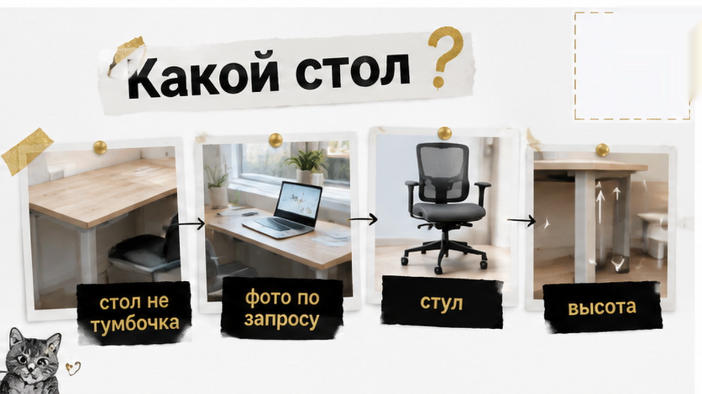
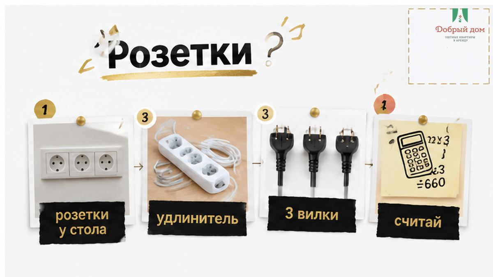
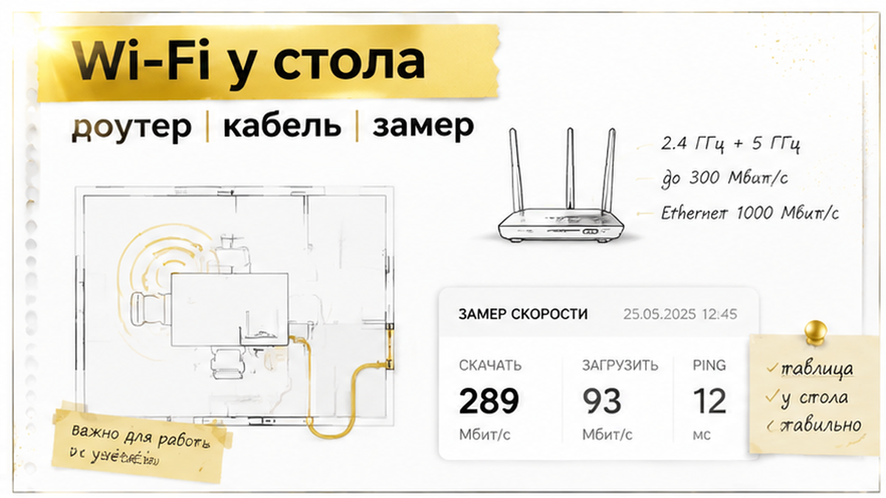
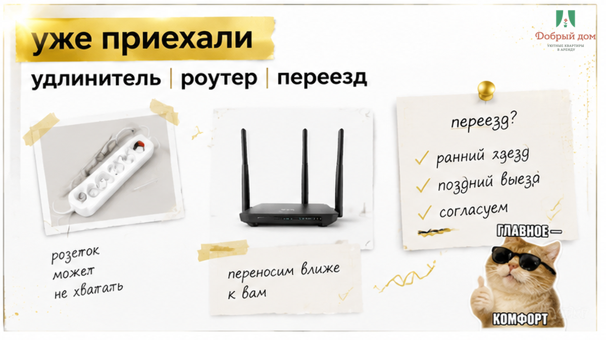

10:00 — звонок: «Нужна квартира в Тюмени на неделю. Работаю удалённо, по московскому времени».
22:00 — заселение. Чемодан у двери, ноутбук под мышкой.
Между этими цифрами — двенадцать часов. И именно за них обычно исчезает нормальное рабочее место.
В 22:00 стол уже не станет шире. Розетка не появится рядом с креслом. Роутер не переедет из дальней комнаты в спальню.
Поэтому о столе, розетках и Wi‑Fi лучше спрашивать до оплаты. Не при заселении и не с мыслью «на месте разберусь».
Три сообщения. Пять минут. И неделя проходит либо за столом у окна, либо на кухонной табуретке с ноутбуком на коленях.
Сценарий знакомый.
Квартиру выбирают по фото гостиной: диван, телевизор, вид на город. Рабочее место не уточняют — кажется, что стол на снимке есть.
А вечером выясняется: стол диаметром 60 сантиметров занят чайником и вазой. Свободная розетка — за холодильником. Роутер — за двумя стенами.
Дальше два пути.
Либо всю поездку работать в неудобной позе, протянув удлинитель из коридора. Либо утром писать: «А можно переселиться?»
Но в будни свободных вариантов может уже не быть: город занят командировочными.
Утром выбор был. Вечером остаётся приспосабливаться.
Разница — в трёх вопросах, заданных вовремя.

Фраза «стол есть» почти ничего не говорит.
Столом могут назвать обеденную группу на четверых, барную стойку или подоконник шириной 25 сантиметров. А это совершенно разные рабочие дни.
Просьба простая: «Пришлите, пожалуйста, фото стола со стулом, как он стоит сейчас».
Она может сэкономить неделю неудобства. Если фото не присылают или снова отправляют картинку из объявления — это тоже ответ.

Удалёнка — это минимум три вилки: ноутбук, телефон, наушники или монитор.
Плюс чайник. Плюс лампа, если работаете вечером.
Поэтому спрашивайте прямо:
Розетка в противоположном углу комнаты формально есть. Но работать рядом с ней придётся на полу.
Если у стола нет розеток — попросите положить удлинитель заранее. Это недорого и решает вопрос ещё до приезда.

«Интернет хороший, оптоволокно» — звучит успокаивающе. Но это ещё не проверка.
До оплаты уточните:
После заселения не разбирайте чемодан первым делом.
Сначала запустите замер скорости на телефоне и ноутбуке. И сделайте это у рабочего стола, а не в коридоре, где сигнал может быть лучше.
Если цифры не устраивают, вы узнаете об этом в 22:10, а не за минуту до планёрки в 9:00. Будет время написать хозяину, попросить перезагрузить роутер или переставить его ближе.
И держите запас мобильного интернета на телефоне. Не потому, что Wi‑Fi обязательно подведёт. Просто раздать интернет с телефона — пятнадцать секунд, а искать другую квартиру в 8 утра — полдня.
Об этом часто вспоминают уже на первом созвоне.
Дневной свет из окна — хорошо. Но если стол стоит спиной к окну, в камере вы будете силуэтом.
Настольная лампа помогает работать вечером. Плотные шторы — выспаться после ночного созвона и убрать пересвет из кадра.
Про шум тоже стоит спросить заранее: идёт ли рядом ремонт, выходят ли окна во двор или на проезжую часть, есть ли стройка в квартале.
Тюмень активно строится. Поэтому «тихий центр» и «тихая новостройка» — разные истории.
Хозяин, который сдаёт свои квартиры сам, обычно отвечает прямо. Ему невыгодно, чтобы гость уехал через два дня.
Одно сообщение закрывает почти весь вопрос. Отправляйте его до оплаты:
Здравствуйте! Планирую работать из квартиры на удалёнке. Уточните, пожалуйста:
1. Какой стол и стул для работы, пришлите фото как есть сейчас.
2. Сколько свободных розеток рядом со столом, есть ли удлинитель.
3. Интернет проводной или мобильный, где стоит роутер, можно ли подключиться кабелем.
4. Окна во двор или на дорогу, есть ли рядом ремонт.
5. Есть ли настольная лампа и плотные шторы.
Пять пунктов.
Если на них отвечают конкретно и присылают фото — можно платить. Если отвечают «всё есть, не переживайте» — лучше уточнить ещё раз или поискать дальше.
Такие разборы — что спросить до оплаты — мы выкладываем в телеграм-канале «Добрый дом». Там же публикуем свободные даты и фото квартир изнутри, без ретуши.

Мы — «Добрый дом». Сдаём свои квартиры в Тюмени, класс комфорт+.
Мы не агрегатор и не посредник. Вы общаетесь с людьми, которые отвечают за квартиру. Поэтому на вопрос о столе или розетках получаете ответ, а не отписку.
Удобнее в мессенджере — мы на связи в MAX или напрямую с менеджером в телеграме.
Задайте те же пять вопросов из чек-листа. Мы дадим пять конкретных ответов и пришлём фото.
Иногда переезжать уже некуда. Тогда план на вечер такой:
Звонок в 10:00 и заселение в 22:00 — один день, но разные возможности.
Утром можно выбрать квартиру со столом, розетками рядом и роутером в нужной комнате. Вечером остаётся работать с тем, что есть.
Пять вопросов до оплаты — и неделя проходит за нормальным рабочим местом.
Если ищете квартиру в Тюмени для удалёнки или командировки — забронировать можно здесь или звоните и пишите: +7 993 574-83-22.
Пришлём фото рабочего места до оплаты — чтобы в 22:00 не было сюрпризов.
Другие разборы для гостей Тюмени — в блоге «Доброго дома»: что проверить при заселении и как выбрать район под свои задачи.